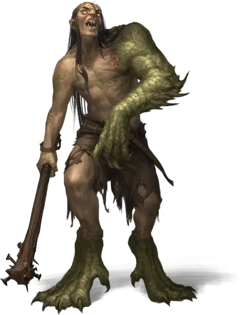

Исчадие драконьей плоти
Dragonflesh Grafter
Большой Монстр, нейтрально-злой

Класс Доспеха 14 (природный доспех)
Хиты 52 (7к10 + 14)
Скорость 30 футов
| мод | спас | ||
|---|---|---|---|
| СИЛ | 16 | +3 | +5 |
| ЛОВ | 11 | +0 | +0 |
| ТЕЛ | 14 | +2 | +4 |
| мод | спас | ||
|---|---|---|---|
| ИНТ | 10 | +0 | +0 |
| МДР | 10 | +0 | +0 |
| ХАР | 6 | −2 | −2 |
Чувства пассивное Восприятие 10
Языки Общий, Драконий
Опасность 3 (700 опыта)
Бонус мастерства +2
Действия
Мультиатака. Исчадие совершает одну атаку Когтем и одну Палицей.
Коготь. . Рукопашная атака оружием: +5 к попаданию, досягаемость 10 фт., одна цель. Попадание: 7 (1к8+3) рубящего урона плюс 5 (1к10) урона ядом.
Палица. . Рукопашная атака оружием: +5 к попаданию, досягаемость 10 фт., одна цель. Попадание: 12 (2к8+3) дробящего урона.
Тошнота кислотой (перезарядка 5-6). Исчадие извергает струю кислой желчи 30-футовым конусом. Все существа в этой области должны совершить спасбросок Ловкости Сл 12, получая 14 (4к6) урона кислотой при провале или половину этого урона при успехе.
Описание
Обычное исчадие драконьей плоти - это неуклюжая помесь качеств драконов и двуногих, ростом от 8 до 12 футов. По мере того как его изначальная природа ослабевает, его драконьи силы растут, придавая ему толстый слой брони из чешуи дракона, который покрывает измененные участки его тела. Исчадие драконьей плоти может изрыгнуть струю едкой кислоты, насмешку над дыханием дракона.
Как универсальный результат их экспериментов, извратители становятся одержимыми сокровищами. Их жадность заставляет их собирать любое золото или драгоценные камни, которые они смогут. Собрав сокровища в свои логова, они часами разглядывают сверкающие, золотые безделушки.
Исчадия драконьей плоти. Исчадия драконьей плоти практикуют запрещенные ритуалы и рискованные эксперименты над собой, изменяя свое тело и разум, чтобы подражать драконам, которых они почитают. Они собирают части драконов — чешую, зубы, кожу, плоть, крылья и кости, — которые они подбирают вокруг логовищ драконов, берут с трупов драконов или покупают у торговцев и искателей приключений. Они сшивают, имплантируют или поглощают эти части дракона, пытаясь внедрить их в свои собственные тела и поглотить скрытую магию, которая сохраняется в драконьих останках.
В то время как большинство потенциальных извратителей становятся обладателями страшных шрамов или вовсе умирают после своих экспериментов, некоторые выживают как Мерзкие ужасы. Их разум искажается магической злобой, и от их прежнего "я" остается лишь тень. В самых крайних случаях получившаяся мерзость не содержит в себе никаких следов того человека, которым она когда-то была, и полностью управляется жаждой дракона к сокровищам.